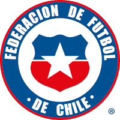

La Roja
La selección de fútbol de Chile, también conocida como la Roja, término afianzado en la década de 1980, es el equipo representativo de dicho país en la categoría masculina de fútbol, la tercera selección nacional más antigua de América y una de las veinte en el mundo—disputó su primer partido internacional el 27 de mayo de 1910 ante Argentina—.Su organización está a cargo de la Federación de Fútbol de Chile (FFCh), creada en 1895, afiliada a la FIFA desde 1913 y una de las cuatro fundadoras de la Confederación Sudamericana de Fútbol (Conmebol) en 1916. A nivel absoluto, ha participado en nueve de las 21 Copas Mundiales (1930, 1950, 1962, cuando fue el anfitrión; 1966, 1974, 1982, 1998, 2010 y 2014), torneo en el que obtuvo el tercer lugar en 1962, el principal logro del fútbol chileno. Ha competido en una Copa Confederaciones, donde fue subcampeón en 2017, en 40 de las 47 ediciones de la Copa América, torneo que ha ganado en dos ocasiones (2015 y 2016), y en dos de las tres ediciones del Campeonato Panamericano de Fútbol, donde fue subcampeón en 1952. Su mejor puesto en la Clasificación Mundial de la FIFA ha sido el tercero en 2016. A nivel juvenil, la selección sub-20 ha participado en seis de las 22 Copas Mundiales (1987, cuando actuó de local; 1995, 2001, 2005, 2007 y 2013) y la selección sub-17, en cinco de las 18 Copas Mundiales (1993, 1997, 2015, cuando la albergó; 2017 y 2019), en las que sus mejores resultados han sido dos terceros lugares: en la sub-17 de 1993 y en la sub-20 de 2007. En los Juegos Olímpicos de verano, ha competido en cuatro de las 24 ediciones —con la selección absoluta (1928), selección aficionada (1952), selección juvenil (1984) y selección sub-23 (2000)—, consiguiendo en la última la medalla de bronce. Con estos logros, es —junto con las selecciones masculinas de Alemania, Argentina, Brasil, España y Francia— una de las que ha subido al podio en la historia de los cinco campeonatos de nivel global: los Mundiales absoluto, sub-20 y sub-17, así como los torneos confederativo y olímpico. Su sede local es el Estadio Nacional Julio Martínez Prádanos, ubicado en la comuna de Ñuñoa en la ciudad de Santiago. Se entrena y se concentra en la misma ciudad, en el Complejo Deportivo Juan Pinto Durán, en la comuna de Macul. Su hinchada es conocida como Marea Roja.